Non-Locking Carabiners
Carabiners with no mechanism to secure the gate against unintentional opening.
| Image | Summary | ||||
|---|---|---|---|---|---|
 | (Unknown) (Oval) (yellow tape) | oval | n/a | n/a | unknown carabiner c. 1950-1960s |
 | (unknown) (MADE IN USA) | oval | n/a | n/a | unknown brand well finished oval |
| (unknown) (oval) (square shoulder) | oval | n/a | n/a | unknown carabiner with tri-grooved pin | |
| (unknown) BIOLA | oval | n/a | n/a | basic oval with owner's mark | |
| A5 Grade VI (signed) | oval | n/a | n/a | SMC whitelabel produced carabiner for A5 (and signed by John Middendorf) | |
 | ABC (straight gate) | asymmetric D | n/a | n/a | keylock carabiner, whitelabel for ABC by KONG |
 | BONAITI (D) (2200) | D | n/a | n/a | vintage symmetric D with slight nose |
| BONAITI (D) (2500) | D | n/a | n/a | vintage symmetric D with slight nose | |
| Bedayn Oval (CALIFORNIA) | oval | n/a | n/a | early post-war aluminium oval by a climbing icon | |
| Bedayn Oval (CALIFORNIA) (alt) | oval | n/a | n/a | early post-war aluminium oval by a climbing icon | |
 | BetaBiner (oval) | oval | n/a | n/a | 1980s whitelabel oval |
| 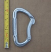 | Black Diamond Big Easy Bent Gate | asymmetric D | n/a | n/a | narrowed spine permits gate/spine overlap |
| Black Diamond Dynotron v1 | bent spine | n/a | n/a | channelized gate | |
| Black Diamond Enduro (CE0082) (v1 alt) | asymmetric D | n/a | n/a | with quicksilvers, shows evolution of carabiner manufacturing | |
| Black Diamond Enduro (CE0082) v1 | asymmetric D | n/a | n/a | with quicksilvers, shows evolution of carabiner manufacturing | |
| Black Diamond Enduro (CE0639) v2 | asymmetric D | n/a | n/a | with quicksilvers, shows evolution of carabiner manufacturing | |
| Black Diamond HoodWire | asymmetric D | n/a | n/a | original wire-guarded clean nose wiregate | |
| Black Diamond HotWire v2 | asymmetric D | n/a | n/a | the original climbing wiregate | |
 | Black Diamond Light D (v1) | D | n/a | n/a | Classic Symmetric D |
| 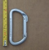 | Black Diamond Light D (v2) | D | n/a | n/a | Classic Symmetric D |
 | Black Diamond Light D (v3) | D | n/a | n/a | Classic Symmetric D c. 2003 |
| Black Diamond LiteWire | asymmetric D | n/a | n/a | representative of BD's modern production methods | |
 | Black Diamond LiveWire v2 | bent spine | n/a | n/a | wire-guarded snagless nose, forged grip aid on spine |
| Black Diamond LiveWire (double-diamond) | bent spine | n/a | n/a | full-sized wiregate, forged grip-aid on spine | |
| Black Diamond Neutrino (I-beam) | asymmetric D | n/a | n/a | redesign of iconic compact/racking carabiner | |
| Black Diamond Neutrino (T-beam) (large nose) | asymmetric D | n/a | n/a | iconic compact/racking carabiner | |
 | Black Diamond Oval (c-diamond) (kN -USA) | oval | n/a | n/a | classic BD oval |
 | Black Diamond Oval (c-diamond) (kg) | oval | n/a | n/a | classic BD oval |
| Black Diamond Oval (double diamond) (18/7/6) | oval | n/a | n/a | late generation cold-forged BD oval | |
| Black Diamond Oval (double diamond) (18/7/7) | oval | n/a | n/a | late generation cold-forged BD oval | |
 | Black Diamond OvalWire | offset oval | n/a | n/a | lightweight take on a classic(ish) shape |
| Black Diamond Oz v1 | asymmetric D | n/a | n/a | ultralight wiregate, flat profile | |
| Black Diamond Oz v2 | asymmetric D | n/a | n/a | wire-guarded clean nose wiregate, ultra light | |
 | Black Diamond Oz v2 (factory second) | asymmetric D | n/a | n/a | wire-guarded snagless wiregate, ultra light |
| Black Diamond QuickWire v1 | asymmetric D | n/a | n/a | early low-cost wiregate | |
| Black Diamond Quicksilver2 Bent Polished | asymmetric D | n/a | n/a | basic bentgate | |
| Black Diamond Quicksilver2 Straight Gate v2 | asymmetric D | n/a | n/a | basic straightgate | |
| Black Diamond Quicksilver2 Straight Gate v3 | asymmetric D | n/a | n/a | basic straightgate | |
 | Black Diamond Quicksilver2 Straight Gate v4 | asymmetric D | n/a | n/a | basic straightgate |
 | Black Diamond Quicksilver2 Straight Gate v5 | asymmetric D | n/a | n/a | classic workhorse straightgate |
| Black Diamond Quicksilver2 Straight Gate (CE950082) v1 | asymmetric D | n/a | n/a | basic straightgate | |
 | Black Diamond The Fin (dome rivets + batch mark) (bright) | bent spine | n/a | n/a | BD's first hot-forged carabiner, patented finger grip |
 | Black Diamond The Fin (flat rivets) (black) | bent spine | n/a | n/a | BD's first hot-forged carabiner, patented finger grip |
 | Black Diamond The Fin (flat rivets) (bright) | bent spine | n/a | n/a | BD's first hot-forged carabiner, patented finger grip |
 | BlueWater (omegalight D) (bent gate) | asymmetric D | n/a | n/a | mid '90s quickdraw carabiner |
 | BlueWater (omegalight D) (straight gate) | asymmetric D | n/a | n/a | mid '90s quickdraw carabiner |
 | BlueWater (solid D) | asymmetric D | n/a | n/a | basic solid gate |
| 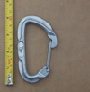 | BlueWater (wire D) | asymmetric D | n/a | n/a | budget wiregate |
| Buckingham Ox Block | other | n/a | n/a | pulley with integrated carabiner becket and swivel | |
 | CAMP (D) (reverse notch & pin) | D | n/a | n/a | reverse notch & pin snagless nose |
 | CAMP (compact S-spine) (bent gate) | S-spine | n/a | n/a | mild s-bend spine |
| CAMP (light compact d) | asymmetric D | n/a | n/a | 40 gr carabiner from the pin & notch era | |
 | CAMP Calypso Bent Gate | bowed spine | n/a | n/a | 2000's bowed-spine bent gate |
| CAMP Dyon | swept spine | n/a | n/a | unique keylock wiregate | |
 | CAMP Multi-Use BET (Bent Gate) | asymmetric D | n/a | n/a | reverse notch & pin snagless nose |
| CAMP Multi-Use BET (Bent Gate) (scalloped) | asymmetric D | n/a | n/a | reverse notch & pin snagless nose | |
| CAMP STEELKAR BENT GATE | asymmetric D | n/a | n/a | demonstrates wiregate weakness | |
| CMC Flash.G Escape Anchor | other | n/a | n/a | escape hook with integrated carabiner for anchor/descent options | |
| CMI (D) | D | n/a | n/a | basic D from an uncommon carabiner manufacturer | |
 | CT-Climbing Technology Berry W | asymmetric D | n/a | n/a | wire-guarded clean nose wiregate |
| Charlet Moser BIBOLLET | asymmetric D | n/a | n/a | offset gate | |
| Charlet Moser Y.SEIGNEUR | D | n/a | n/a | short & stout D | |
 | Chouinard (standard) 1974 | oval | n/a | n/a | vintage carabiner |
 | Chouinard (standard) 1978 | oval | n/a | n/a | vintage carabiner |
| Chouinard Featherweight 1977 | oval | n/a | n/a | hollow tube carabiner from Chouinard | |
| Chouinard oval 1990 | oval | n/a | n/a | last iteration of the Chouinard oval | |
 | Chouinard/Salewa (standard) 1972 | asymmetric D | n/a | n/a | vintage chouinard/Salewa carabiner |
 | Climb High (D) | D | n/a | n/a | early milled-nose D |
 | Climb High New Alp | swept spine | n/a | n/a | whitelabel production bent gate by Charlet Moser, spine text provides grip |
| Climb High Oval | oval | n/a | n/a | early milled-nose oval | |
 | Clog (Asymmetric D) (2100) (angled nose) | asymmetric D | n/a | n/a | early compact asym'd |
| Clog (Asymmetric D) (2200) (narrow) | asymmetric D | n/a | n/a | classic compact asymmetric d with large solid gate | |
| Clog (Asymmetric D) (2200) (wide) | asymmetric D | n/a | n/a | early compact asym'd | |
 | Clog (Asymmetric D) (2500) | asymmetric D | n/a | n/a | basic asym'd from prolific manufacturer |
| Clog (Oval) (flat profile) | oval | n/a | n/a | vintage oval - flat profile | |
 | Clog (Oval) (round profile) | oval | n/a | n/a | vintage oval |
| Clog (Reverse Asymmetric D) (2500) (angled nose) | asymmetric D | n/a | n/a | reverse asymmetric shape | |
 | Clog (Reverse Asymmetric D) (3000) | asymmetric D | n/a | n/a | medium sized asym'd from prolific manufacturer |
 | DMC (oval) (6mm mark) | oval | n/a | n/a | early post-war aluminium oval from an unknown retailer |
| DMC (oval) (8mm mark) | oval | n/a | n/a | early post-war aluminium oval from an unknown retailer | |
| DMM Alpha Trad | bent spine | n/a | n/a | snagless bent-spine wiregate | |
| DMM Eclipse (Bent Gate) | asymmetric D | n/a | n/a | full-sized bent-gate climbing carabiner | |
| DMM Eclipse (Bent Gate) (flat shield) | asymmetric D | n/a | n/a | full-sized bent-gate quickdraw carabiner | |
| DMM Eclipse (Straight Gate) | asymmetric D | n/a | n/a | full-sized quickdraw carabiner | |
 | DMM Gym Draw Carabiner | asymmetric D | n/a | n/a | steel carabiner for fixed quickdraws |
| DMM Mamba (with sling) | S-spine | n/a | n/a | first hot-forged carabiner & captive eye for webbing | |
| DMM Merlin (bent gate) | asymmetric D | n/a | n/a | basic quickdraw carabiner | |
| 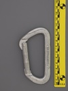 | DMM Merlin (straight gate) | asymmetric D | n/a | n/a | basic quickdraw carabiner |
 | DMM Revolver v2 | asymmetric D | n/a | n/a | the original integral pulley carabiner |
 | DMM Shadow Bent Gate | asymmetric D | n/a | n/a | hot-forged gate |
 | DMM Wirelock | asymmetric D | n/a | n/a | reverse keylock twisted wiregate |
| EIGER D (staked) | D | n/a | n/a | vintage D | |
 | EIGER Oval | oval | n/a | n/a | somewhat common vintage carabiner |
| EMS (accessory) | asymmetric D | n/a | n/a | suprisingly featured accessory carabiner | |
 | EVER NEW (PIONEER) | D | n/a | n/a | carabiner by iconic japanese brand |
| Edelrid Nineteen G | swept spine | n/a | n/a | ultra-light full-strength carabiner | |
 | Gerry H54 (asymmetric T-beam) | asymmetric D | n/a | n/a | historic carabiner from the maker of the first asymmetric d carabiners |
| GrandWall Equipment Brasovia Standard BentGate | asymmetric D | n/a | n/a | dirtbag priced no-frills carabiner | |
| 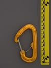 | Grivel Plume C | asymmetric D | n/a | n/a | ultralight wiregate with wiregate captive end |
| Grivel Plume Evo Wire | asymmetric D | n/a | n/a | ultralight ultracompact half-hooded wiregate | |
| Grivel Stealth Bent | bent spine | n/a | n/a | unique faceted shape | |
| Grivel Stealth Straight | bent spine | n/a | n/a | unique faceted shape | |
| Grivel Steel Two | asymmetric D | n/a | n/a | steel carabiner for permanent quickdraws | |
| Holubar (oval) | oval | n/a | n/a | basic oval from iconic gear company | |
| IME (oval) | oval | n/a | n/a | basic economy retail oval | |
| Irbis (D) | D | n/a | n/a | titanium | |
 | KONG BONAITI (bent gate) | asymmetric D | n/a | n/a | basic keylock bent gate |
 | KONG Helium (bentgate) | asymmetric D | n/a | n/a | lightweight micro carabiner |
 | KONG-BONAITI (D) (offset gate opening) | D | n/a | n/a | offset gate results in huge gate opening |
 | KONG-BONAITI (Helium) (5.10) | asymmetric D | n/a | n/a | early lightweight compact keylock |
| KONG-BONAITI (Helium) (5.10) (reverse 5.10) | asymmetric D | n/a | n/a | early lightweight compact keylock | |
| KONG-BONAITI (oval) (2250/800) (interior gate cuts) | oval | n/a | n/a | oval with gate scallop | |
 | Kong Ergo Open Latch | S-spine | n/a | n/a | gate hold open & lock-under-load features |
 | LAPRADE (asymmetric D) | asymmetric D | n/a | n/a | well worn asym'd by French brand |
 | Latok (asymmetric d) | asymmetric D | n/a | n/a | lightweight compact carabiner from historic brand |
 | Latok / Faders (compact D) (1700 kg) | asymmetric D | n/a | n/a | early lightweight compact carabiner |
| Latok Simond Cliff Express | asymmetric D | n/a | n/a | unique finger grip facilitates gate opening | |
 | Liberty USA O | oval | n/a | n/a | somewhat common vintage carabiner |
| Lowe-CAMP (Snagless D) | asymmetric D | n/a | n/a | snagless nose, interior relieved spine for wider gate opening | |
 | MSR D I-biner | asymmetric D | n/a | n/a | Pioneering features from MSR brand (known now for camping stoves) |
| MSR D I-biner (anodized) | asymmetric D | n/a | n/a | Pioneering features from MSR brand (known now for camping stoves) | |
| MSR Oval I-biner | offset oval | n/a | n/a | Pioneering features from MSR brand (known now for camping stoves) | |
| Mad Rock Trigger Wire | asymmetric D | n/a | n/a | gate hold-open trigger mechanism | |
| Mammut Bionic Wiregate v3 | swept spine | n/a | n/a | webbeed I-beam carabiner, textured swept spine | |
 | Mammut Element Keylock | asymmetric D | n/a | n/a | Quality 2000's keylock, whitelabel production |
 | Metolius X-Comp bent gate | asymmetric D | n/a | n/a | interesting nose design |
 | Midwest Mountaineering Oval | oval | n/a | n/a | classic oval from a classic retailer |
 | Omega (oval) v1 | oval | n/a | n/a | early oval from a budget brand |
 | Omega (oval) v2 | oval | n/a | n/a | basic oval |
 | Omega Pacific (D) (cold forged) | D | n/a | n/a | 34kN cold-forged D |
 | Omega Pacific (Oval) (v1) | oval | n/a | n/a | standard 1990s oval |
| Omega Pacific Classic Bent Gate | asymmetric D | n/a | n/a | inexpensive basic carabiner, flat-spun rivets may have issues | |
| Omega Pacific Classic Straight Gate | asymmetric D | n/a | n/a | inexpensive basic carabiner, flat-spun rivets may have issues | |
| Omega Pacific Doval | D | n/a | n/a | worst features of both a D and an oval | |
| Omega Pacific JC (long split) | swept spine | n/a | n/a | unique cold-forged split-spine construction | |
 | Omega Pacific JC (short split) | swept spine | n/a | n/a | unique split-spine cold-forged construction |
 | Omega Pacific JC (no CE) (long split) | swept spine | n/a | n/a | unique cold-forged split-spine construction |
 | Omega Pacific Omegalite | asymmetric D | n/a | n/a | small diameter roundstock minimizes weight, unusual crossload prone nose |
 | Omega Pacific Omegalite 3 Bent Gate (flat nose) | asymmetric D | n/a | n/a | prominent nose & fractional strength rating |
| 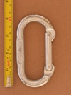 | Omega Pacific Standard Oval (upper case KN) | oval | n/a | n/a | overbuilt oval |
| Petzl Ange S | asymmetric D | n/a | n/a | unique reverse-keylock gate with hidden spring | |
| Petzl Spirit Bent Gate (I-beam) | asymmetric D | n/a | n/a | update of a classic design | |
| Petzl Spirit Bent Gate (Skeletonized I-beam) | asymmetric D | n/a | n/a | skeletonized I-beam | |
| Petzl Spirit Straight Gate (CE0197) | asymmetric D | n/a | n/a | classic keylock climbing carabiner | |
| Petzl Spirit Straight Gate (CE950082) | asymmetric D | n/a | n/a | early keylock design, classic carabiner model | |
 | Petzl Spirit Straight Gate (I-beam) | asymmetric D | n/a | n/a | update of a classic design |
 | Petzl Spirit Straight Gate (Skeletonized I-beam) | asymmetric D | n/a | n/a | skeletonized I-beam |
| Pierre Allain (asymmetric D) (flat profile) | asymmetric D | n/a | n/a | gate made from tubing, from an early carabiner manufacturer | |
| Pierre Allain (asymmetric D) (flat profile) (alt) | asymmetric D | n/a | n/a | gate made from tubing, from an early carabiner manufacturer | |
 | Pierre Allain (asymmetric D) (flat profile) (anodized gate) | asymmetric D | n/a | n/a | anodized gate made from tubing, from an early carabiner manufacturer |
| Pierre Allain (asymmetric D) (round profile) | asymmetric D | n/a | n/a | Later carabiner from an iconic manufactuer | |
 | REI (oval) (milled nose) | oval | n/a | n/a | vintage bent/milled oval |
| REI Classic D | asymmetric D | n/a | n/a | economical asymmetric d | |
 | REI Classic Oval | offset oval | n/a | n/a | whitelabel production |
 | REI Gold D (flat nose) | asymmetric D | n/a | n/a | REI carabiner with dot-peened markings on the gate and only 21 kN rating |
| REI Gold D (round nose) | asymmetric D | n/a | n/a | REI carabiner with dot-peened markings on the gate | |
 | REI Gold D (round nose) (purple) | asymmetric D | n/a | n/a | REI carabiner with dot-peened markings on the gate, bright purple anodization |
| REI Gold Oval (24 kN) (round nose) | offset oval | n/a | n/a | REI carabiner with dot-peened markings on the gate | |
 | Royal Robbins / Salewa (hollow oval) (v2) | oval | n/a | n/a | hollow - constructed from tubing not solid aluminum rod |
| 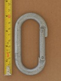 | Royal Robbins / Salewa (hollow oval) (v3) | oval | n/a | n/a | hollow - constructed from tubing not solid aluminum rod |
 | Royal Robbins / Salewa (oval) (long hinge) | oval | n/a | n/a | vintage oval |
| Royal Robbins / Salewa (oval) (short hinge) | oval | n/a | n/a | vintage oval | |
| 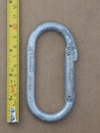 | Royal Robbins / Salewa (oval) (flush hinge) | oval | n/a | n/a | vintage oval |
 | SMC Oval v1 (Orange) | oval | n/a | n/a | early unrated milled-nose oval in orange anodization |
 | SMC Oval v2 | oval | n/a | n/a | early unrated stamped-nose oval |
| Salewa Hollow Karabiner (black/gold) | D | n/a | n/a | hollow - constructed from tubing not solid aluminum rod | |
 | Salewa Hollow Karabiner (short hinge) | D | n/a | n/a | hollow - constructed from tubing not solid aluminum rod |
 | Salewa Hot | asymmetric D | n/a | n/a | 2000's workhorse carabiner from an old brand |
 | Simond Cliff | asymmetric D | n/a | n/a | classic Simond asym'd |
 | Simond Cliff Express | asymmetric D | n/a | n/a | unique finger grip facilitates gate opening |
 | Simond Spider Bent Gate | asymmetric D | n/a | n/a | proprietary reverse keylock (Simond monobloc) |
| 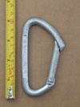 | Simond Spider Straight Gate | asymmetric D | n/a | n/a | proprietary reverse keylock (Simond monobloc) |
 | Ski Hut (oval) | oval | n/a | n/a | early post-war aluminium oval for an iconic retailer |
| Skylotec gripZ-st | asymmetric D | n/a | n/a | overmolded textured grip sections & small nose guard | |
| Slack-Inov Vortex 2 | circle | n/a | n/a | gated rope thimble for highline tether | |
 | Slackit SRL Rollex C | bent spine | n/a | n/a | becketed webbing pulley carabiner for slacklines |
 | Stubai (1990 T-beam) | asymmetric D | n/a | n/a | lightweight asymmetric D |
| Stubai (Klettersteig) (non-locking) | asymmetric D | n/a | n/a | notch & window gate latch on large non-locker | |
 | Stubai 3-D Ultralight | other | n/a | n/a | unique twisted design, notched nose, and pinless/windowed gate |
 | Stubai EASY CLIP Bent Gate | asymmetric D | n/a | n/a | snagless clawlock nose |
| 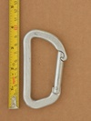 | Stubai EASY CLIP Straight Gate | asymmetric D | n/a | n/a | snagless clawlock nose |
 | Stubai Genius A | other | n/a | n/a | gate hold-open mechanism, stamped flat body |
| Stubai Genius B | other | n/a | n/a | gate hold-open mechanism, stamped flat body | |
 | Stubai ROCK CLIP Bent Gate | asymmetric D | n/a | n/a | snagless clawlock nose |
| 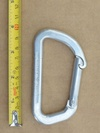 | Stubai ROCK CLIP Straight Gate | asymmetric D | n/a | n/a | snagless clawlock nose |
| Trango (bright wiregate) (24kn) | asymmetric D | n/a | n/a | whitelabel carabiner produced for Trango | |
 | Trango (standard bent gate) | asymmetric D | n/a | n/a | mid-1990's bent gate |
 | US AMF81 | oval | n/a | n/a | US Government steel carabiner |
 | Unmarked (123 smooth) | asymmetric D | n/a | n/a | unknown 10mm steel non-locker |
| Uno (2100) | D | n/a | n/a | japanese simple d | |
 | Uno (2500) | D | n/a | n/a | japanese simple d |
 | Wild Country Helium (v2) | asymmetric D | n/a | n/a | hot-forged hooded wiregate |
| Wild Country Helium 3.0 | asymmetric D | n/a | n/a | state of the art hot-forged hooded wiregate | |
 | Wild Country Oxygen Bent Gate (anodized gate) | asymmetric D | n/a | n/a | snagless clawlock nose |
 | Wild Country Oxygen Straight Gate (anodized gate) | asymmetric D | n/a | n/a | snagless clawlock nose |
 | Wild Country Oxygen Straight Gate (plain gate) | asymmetric D | n/a | n/a | snagless clawlock nose |
| Wild Country USA Almost Oval | offset oval | n/a | n/a | basic D | |
| ace (asymmetric d) | asymmetric D | n/a | n/a | fractional kN ratings from an uncommon brand | |
 | lucKY (keylock) (high logo) | asymmetric D | n/a | n/a | twin keylock nose |
 | lucKY Competition | asymmetric D | n/a | n/a | strange nose, uncommon brand in the US |
 | lucKY III ESCAMP (angled nose) | asymmetric D | n/a | n/a | large asymmetric D |
| lucKY III ESCAMP (flat nose scalloped gate) | asymmetric D | n/a | n/a | large asymmetric D | |
 | lucKY SIURANA (bent gate) | asymmetric D | n/a | n/a | slight t-beam version of the lucKY workhorse |
 | lucKY SIURANA (straight gate) | asymmetric D | n/a | n/a | slight t-beam version of the lucKY workhorse |
 | lucKY Straight Gate v2 | asymmetric D | n/a | n/a | strange nose, uncommon brand in the US |
 | lucKY VII (bent gate) (CE-0123) | S-spine | n/a | n/a | slight s-spine with distinctive nose |
| lucKY VII (bent gate) (CE96-0123) | S-spine | n/a | n/a | slight s-spine with distinctive nose | |
 | lucKY VII (bent gate) (webbing keeper) | S-spine | n/a | n/a | overmolded dogbone keeper |
 | lucKY VII (straight gate) (long nose) | S-spine | n/a | n/a | distinctive nose straight gate from Vaude |
 | lucKY VII (straight gate) (short nose) | S-spine | n/a | n/a | distinctive nose straight gate from Vaude |